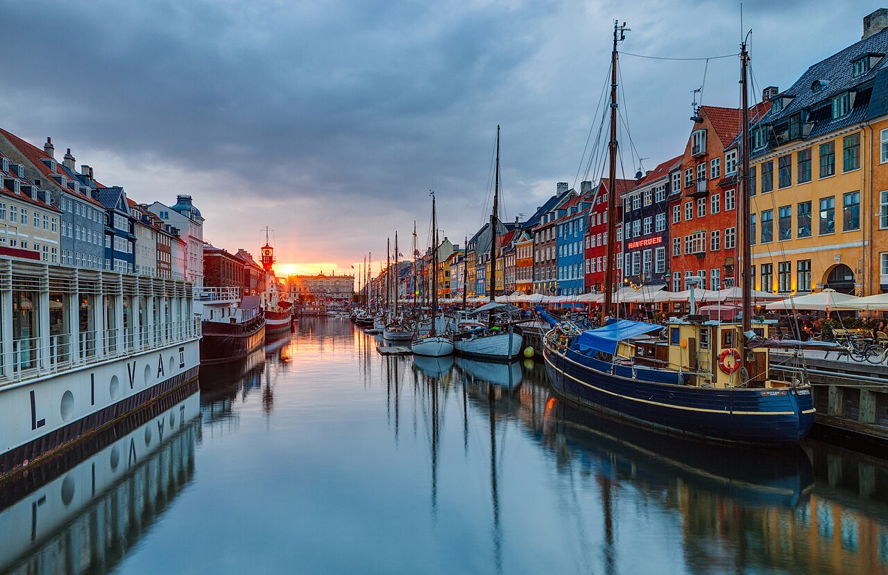
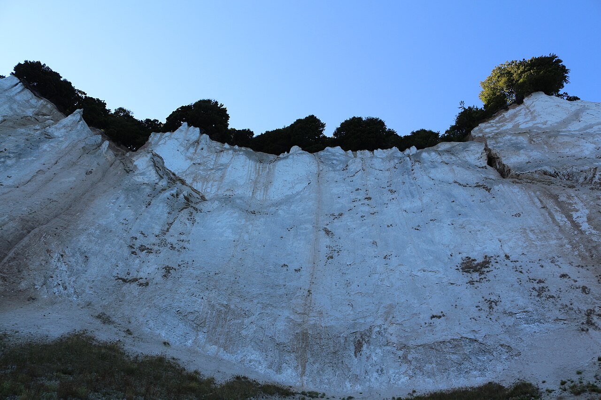
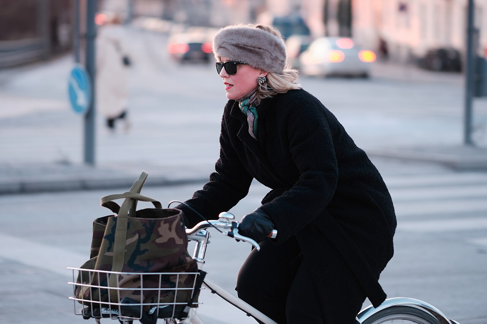
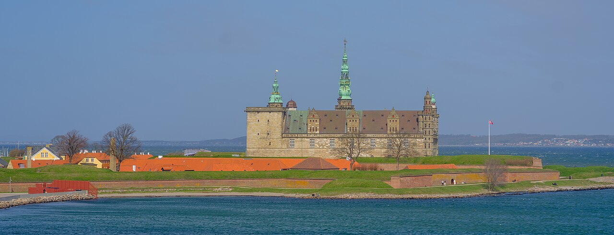
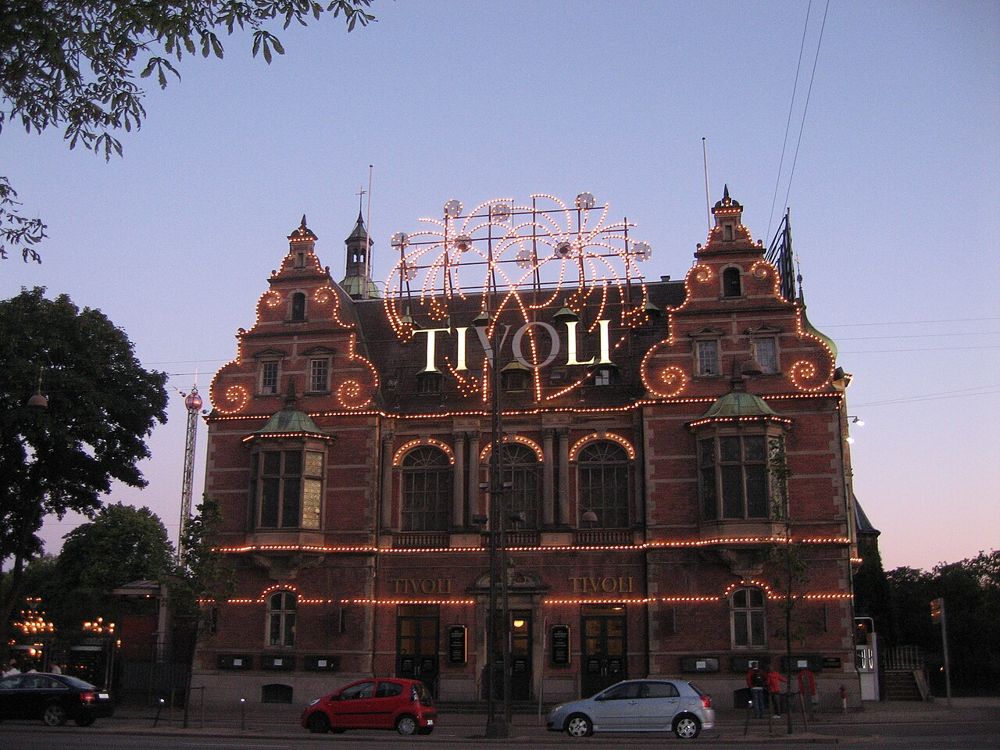
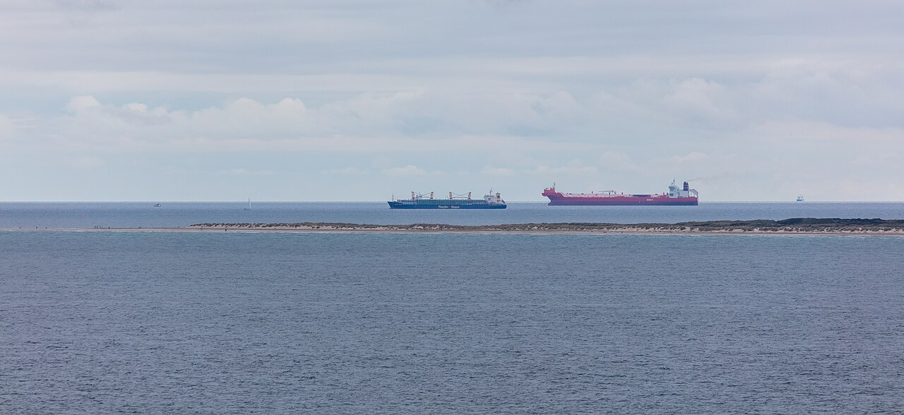
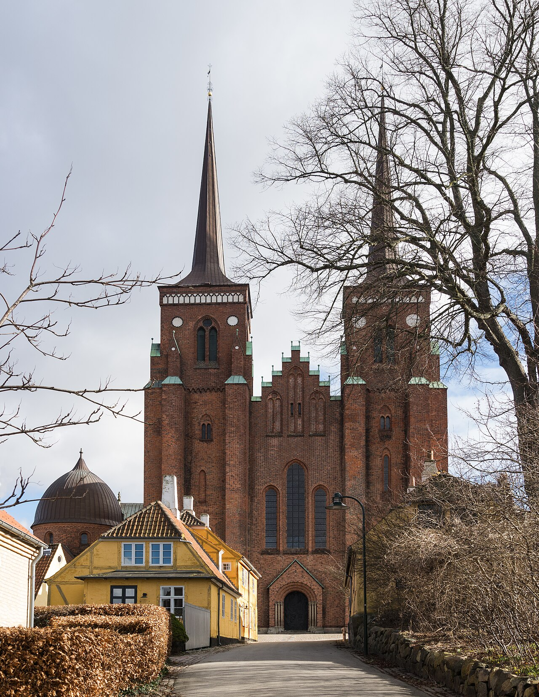

Catedrática: Licda. Elena Del Rosario Tárano Girón
Axel José
José Manuel
José David
Juan Pablo
Dinamarca
Una península, más de 400 islas y seis categorías que funcionan.
Norte de Europa, en Escandinavia. Su única frontera por tierra es con Alemania.
Unos 43,000 km²: dos quintas partes de Guatemala.
Copenhague.
Danés. Cerca del 90 % también habla inglés.
Poco más de 6 millones de habitantes.
La corona danesa. Están en la Unión Europea, pero rechazaron el euro en un referéndum (sep. 2000).
Su bandera es la más antigua del mundo que sigue en uso. Fueron vikingos y hoy son una de las sociedades más pacíficas y digitalizadas del planeta.
Lo analizamos con las seis categorías sociales: cuatro externas y dos internas, de mayor rango.
Medio año con poca luz. De ahí salió el diseño danés.
País eminentemente llano: su punto más alto son 173 m y su costa mide 7,314 km. El 64 % del territorio está bajo cultivo. (Embajada de Dinamarca, 2024)
Templado oceánico: inviernos suaves y veranos frescos. En invierno los días son muy cortos.
Copenhague, Aarhus, Odense y Aalborg.
Como pasan medio año con poca luz, desarrollaron una cultura del hogar de la que salió el diseño danés. La bicicleta es el transporte normal, en cualquier clima.
Electricidad limpia
Producen más energía del viento por habitante que cualquier otro país desarrollado. (Low Carbon Power, 2026 · Sitio oficial de Dinamarca, 2026)
Sin recursos, solo podían competir haciendo las cosas mejor.
Medicamentos, energía del viento, transporte marítimo, agroindustria y diseño.
Casi ninguno. Solo tierra fértil, viento y mar.
Medicamentos, maquinaria, carne de cerdo, lácteos y pescado, más turbinas de viento y juguetes LEGO. (Banco Mundial, 2024)
Uno de los ingresos por persona más altos del mundo y, a la vez, una de las menores desigualdades.
“Solo lo mejor es suficientemente bueno”
LEGO nació del taller de Ole Kirk Christiansen, un carpintero de Billund que tenía esa frase grabada a la entrada. (National Geographic, 2023)
Une la flexibilidad de las empresas con la seguridad del trabajador, apoyado en que el 75 % de los trabajadores está sindicalizado. (Embajada de Dinamarca, 2024)
Sistema de derecho escrito: el conflicto se resuelve con una ley, no con una guerra.
No sigue el modelo anglosajón de Estados Unidos o el Reino Unido, donde el juez se apoya en sentencias anteriores. Las leyes ya están redactadas de antemano y el juez las interpreta y aplica. Cada ley genera documentos preparatorios: esa intención del legislador no obliga a los tribunales, pero influye bastante. (Judiciaries Worldwide, 2024)
Haz clic en los niveles y en los años · Comisión Europea (2024)
No se consiguen de una vez: son trabajo continuo. El médico danés Struensee fue de los primeros en impulsarlos a finales del siglo XVIII. (Sitio oficial de Dinamarca, 2026)
Pilar del Estado desde hace más de cien años y clave del bienestar danés: con la industrialización las mujeres entraron rápido a la fuerza laboral.
Monarquía constitucional con sistema parlamentario.
El rey cumple un papel ceremonial y no gobierna. Aunque en el papel conserva poder, está limitado por las normas constitucionales. (Parlamento Danés, 2024)
Una sola cámara de 179 diputados que aprueba las leyes y el gabinete. (Folketing, 2026)
El rey Federico X desde enero de 2024 y la primera ministra Mette Frederiksen.
La primera ministra y su gabinete, formado con miembros del propio parlamento.
Tribunal Supremo, dos audiencias, el Tribunal Marítimo y Comercial y 24 juzgados locales. (Comisión Europea, 2024)
Vota más del 80 % aunque no sea obligatorio, por la confianza en las instituciones. (PolitPro, 2026)
Formando gobierno en 2026
Lo más largo de su historia, y lo resolvieron con acuerdos. (Infobae, 2026)

Igualdad, honestidad y confianza.
No presumir lo que uno tiene y equilibrar el trabajo con la vida personal: están entre los trabajadores más eficientes de Europa sin vivir para trabajar. (Sitio oficial de Dinamarca, 2026)
La Ley de Jante
Norma social no escrita, nacida en una novela de Aksel Sandemose de 1933: nadie debe creerse superior aunque sepa más o tenga más capacidades. (Ley de Jante, 2026)
Los padres dejan a los bebés dormidos en el cochecito afuera de las cafeterías, y los agricultores ponen frutas y verduras a la orilla de la carretera sin nadie atendiendo.
La confianza de los daneses en su gobierno es del 55.6 %. (La República, 2026, con datos de la OCDE)
Estado confesional con libertad de culto plena.
La Iglesia Protestante Luterana Danesa es religión oficial del Estado desde 1536 y así está en la Constitución. El rey está obligado a pertenecer a ella y cerca del 70 % de los daneses están inscritos en la Iglesia del Pueblo Danés y pagan un impuesto de iglesia. La segunda religión es el islam.
La Navidad el 24 de diciembre, la Semana Santa, la confirmación a los 14 años, el Gran Día de Oración —que solo existe en Dinamarca— y la Noche de San Juan con fogatas en las playas.
En el siglo XIX el pastor luterano Grundtvig fundó las escuelas populares, donde se educaba al campesino común para que pensara por sí mismo. De ahí salió el movimiento cooperativo que organizó la agricultura danesa, y de ahí buena parte de su democracia y su confianza social. Hoy poca gente va al templo cada domingo, pero es ahí donde el danés nace, se casa y se despide.

¿Qué categoría tiene mayor influencia en la identidad de Dinamarca?
Porque es la única que explica a todas las demás. Dinamarca no tiene petróleo, ni minerales, ni buen clima: ninguna ventaja material alcanza para explicar por qué es el país menos corrupto del mundo desde hace ocho años seguidos y el tercero más feliz.
Lo que sí lo explica son virtudes convertidas en costumbre. Esa ética nació de la raíz luterana que Grundtvig llevó del templo a las escuelas populares, pero hoy ya no depende de la práctica religiosa: se transmite como cultura. Es el cimiento donde se paran las otras cinco.
La Ley de Jante les dio una política que negocia en lugar de imponer.
Convertida en hábito, les dio un derecho que se cumple sin vigilancia constante.
Les dio una economía que compite con calidad porque no tenía con qué más competir.
Transparencia Internacional (2026)
Bibliografía
Banco Mundial. (2024). Resumen del comercio de Dinamarca. World Integrated Trade Solution. https://wits.worldbank.org/CountryProfile/es/Country/DNK
Comisión Europea. (2024). Sistemas judiciales nacionales: Dinamarca. Portal Europeo de e-Justicia. https://e-justice.europa.eu/topics/taking-legal-action/legal-systems-eu-and-national/national-justice-systems/dk_es
Constitución de Dinamarca. (2025). En Wikipedia. https://es.wikipedia.org/wiki/Constitución_de_Dinamarca
Defensor del Pueblo Parlamentario de Dinamarca. (2026). The Danish Parliamentary Ombudsman. https://www.en.ombudsmanden.dk/
Embajada de Dinamarca. (2024). Flexiguridad, educación y el Estado de bienestar en Dinamarca. Ministerio de Asuntos Exteriores de Dinamarca. https://spanien.um.dk/es/conoce-dinamarca/informacion-sobre-dinamarca/politica/flexiguridad-educacion-y-el-estado-de-bienestar-en-dinamarca
Embajada de Dinamarca. (2024). La geografía y la infraestructura. Ministerio de Asuntos Exteriores de Dinamarca. https://spanien.um.dk/es/conoce-dinamarca/informacion-sobre-dinamarca/la-geografia-y-la-infraestructura
Folketing. (2026). En Wikipedia. https://es.wikipedia.org/wiki/Folketing
Folketinget. (2024). The Constitutional Act. Parlamento de Dinamarca. https://www.thedanishparliament.dk/en/democracy/the-constitutional-act
Helliwell, J. F., Layard, R., Sachs, J. D. y De Neve, J. E. (Eds.). (2026). Informe Mundial de la Felicidad 2026. Universidad de Oxford y Gallup. https://worldhappiness.report
Infobae. (2026, 3 de junio). Frederiksen logra su tercer mandato en Dinamarca con un giro a la izquierda y una agenda marcada por Groenlandia y la defensa. https://www.infobae.com/america/mundo/2026/06/03/frederiksen-logra-su-tercer-mandato-en-dinamarca…
Judiciaries Worldwide. (2024). Denmark. Federal Judicial Center. https://judiciariesworldwide.fjc.gov/country-profile/denmark
La República. (2026, 2 de junio). Colombia es penúltima en confianza institucional entre países de la Ocde. https://www.larepublica.co/globoeconomia/colombia-es-penultima-en-confianza-institucional-entre-paises-de-la-ocde-4405651
Ley de Jante. (2026). En Wikipedia. https://es.wikipedia.org/wiki/Ley_de_Jante
Low Carbon Power. (2026). Matriz energética de Dinamarca 2025. https://lowcarbonpower.org/es/region/Dinamarca
Matrimonio igualitario en Dinamarca. (2025). En Wikipedia. https://es.wikipedia.org/wiki/Matrimonio_igualitario_en_Dinamarca
Ministerio de Asuntos Exteriores de Dinamarca. (2024). Human rights. https://denmark.dk/society-and-business/human-rights
Ministerio de Asuntos Exteriores de Dinamarca. (2026). Sitio oficial del Reino de Dinamarca. https://denmark.dk
National Geographic. (2023, 11 de marzo). Ole Kirk Christiansen, la vida del carpintero que creó el Lego. https://historia.nationalgeographic.com.es/a/ole-kirk-christiansen-el-creador-de-lego-el-juego-de-construccion-mas-famoso-del-mundo_17770
Nordics.info. (2025). Ombudsman. Universidad de Aarhus. https://nordics.info/show/artikel/preview-ombudsman-1
Organización de las Naciones Unidas. (2024). Perspectivas de la población mundial, revisión de 2024. https://population.un.org/wpp/
PolitPro. (2026). Dinamarca: sistema político y participación electoral. https://politpro.eu/es/dinamarca
Tárano Girón, E. D. R. (2026). Las categorías sociales [Documento de clase]. Claves del Pensamiento 1, Universidad del Istmo.
Transparencia Internacional. (2026). Índice de percepción de la corrupción 2025. https://www.transparency.org/es/cpi
Nyhavn y Christiansborg: Moahim (CC BY-SA 4.0) · Jardines de Tívoli: Junielib (CC BY-SA 4.0) · Møns Klint: Andreas Egger (CC BY-SA 4.0) · Kronborg: ArildV (CC BY-SA 4.0) · Ciclistas en Copenhague: Kristoffer Trolle (CC BY 2.0) · Catedral de Roskilde: Jebulon (CC0) · Grenen, Skagen: Diego Delso (CC BY-SA 4.0).